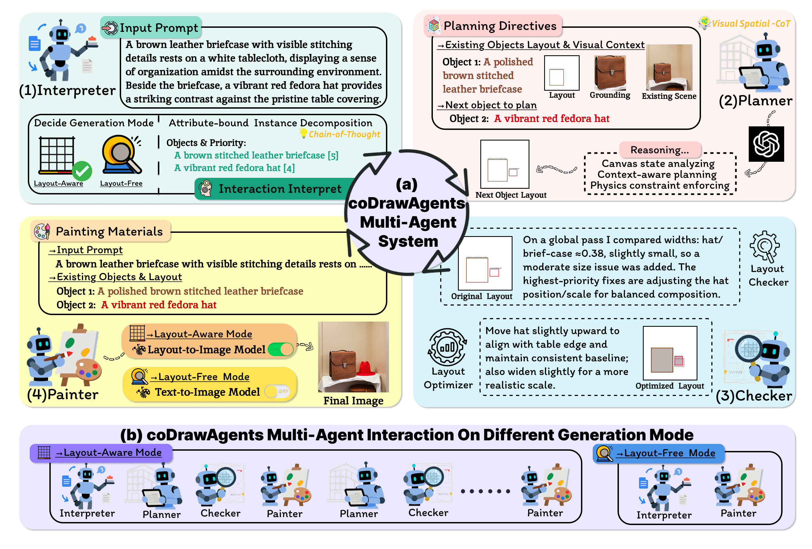
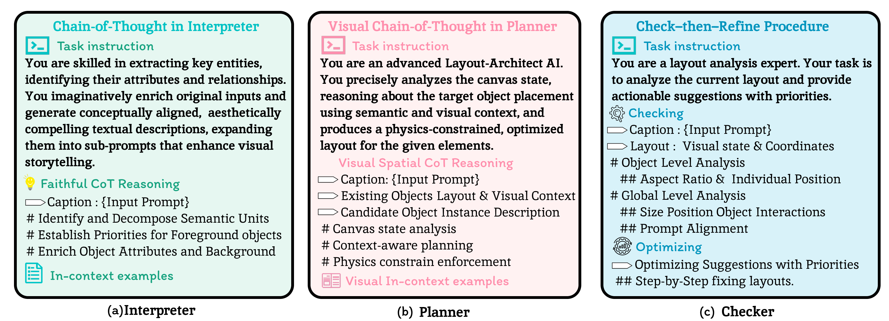
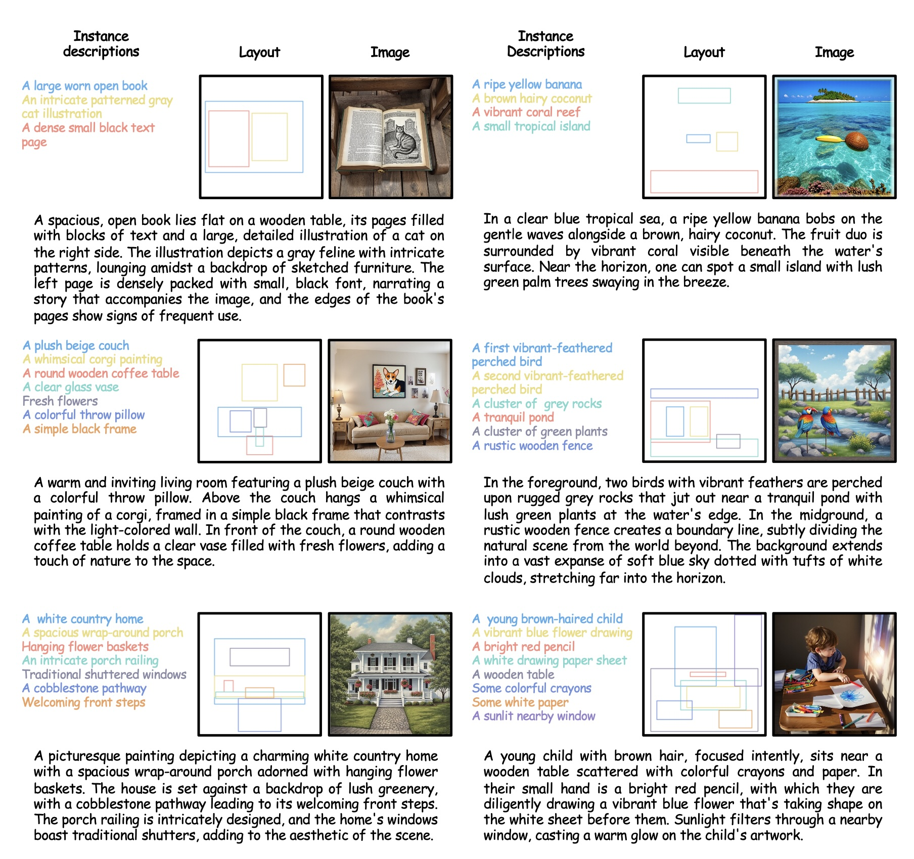
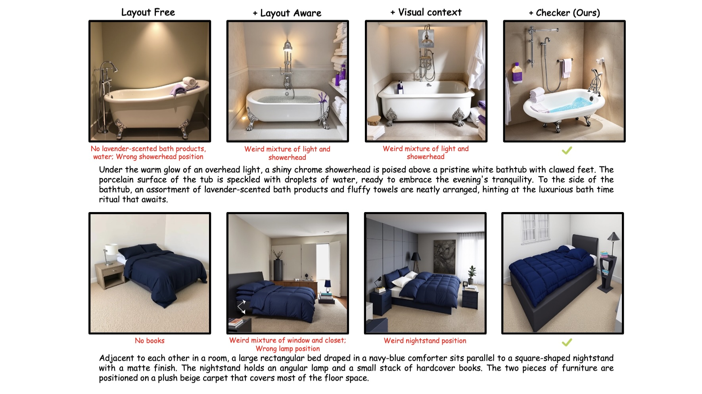

1
Interpreter
Decides whether to use a layout-free or layout-aware pathway, decomposes prompts into attribute-rich object descriptions, ranks semantic salience, and schedules generation rounds.
CVPR 2026 Findings
Lingnan University · Carnegie Mellon University · The Chinese University of Hong Kong · Alibaba DAMO Academy · Shanghai Jiao Tong University · The University of Hong Kong · China University of Petroleum (East China)

Text-to-image generation has advanced rapidly, but existing models still struggle with faithfully composing multiple objects and preserving their attributes in complex scenes. We propose coDrawAgents, an interactive multi-agent dialogue framework with four specialized agents: Interpreter, Planner, Checker, and Painter that collaborate to improve compositional generation. The Interpreter adaptively decides between a direct text-to-image pathway and a layout-aware multi-agent process. In the layout-aware mode, it parses the prompt into attribute-rich object descriptors, ranks them by semantic salience, and groups objects with the same semantic priority level for joint generation. Guided by the Interpreter, the Planner adopts a divide-and-conquer strategy, incrementally proposing layouts for objects with the same semantic priority level while grounding decisions in the evolving visual context of the canvas. The Checker introduces an explicit error-correction mechanism by validating spatial consistency and attribute alignment, and refining layouts before they are rendered. Finally, the Painter synthesizes the image step by step, incorporating newly planned objects into the canvas to provide richer context for subsequent iterations. Together, these agents address three key challenges: reducing layout complexity, grounding planning in visual context, and enabling explicit error correction. Extensive experiments on benchmarks GenEval and DPG-Bench demonstrate that coDrawAgents substantially improves text–image alignment, spatial accuracy, and attribute binding compared to existing methods.
To improve the generality of our approach, covering both general text-to-image cases without explicit layouts and more complex cases requiring layout planning, the Interpreter decides whether to enter the layout-free or the layout-aware mode.
Decides whether to use a layout-free or layout-aware pathway, decomposes prompts into attribute-rich object descriptions, ranks semantic salience, and schedules generation rounds.
Applies a Visual Spatial Chain-of-Thought to analyze the canvas state, reason about context, and enforce physical plausibility when proposing layouts.
Performs check-then-refine at both object and global levels, correcting overlaps, scale drift, and relation inconsistencies across iterations.
Supports both layout-free text-to-image generation and layout-aware rendering, building the scene incrementally so later steps benefit from richer visual context.


| Model | Single Obj. | Two Obj. | Counting | Colors | Position | Color Attri. | Overall↑ |
|---|---|---|---|---|---|---|---|
| PixArt-Σ | 0.98 | 0.50 | 0.44 | 0.80 | 0.08 | 0.07 | 0.48 |
| Emu3-Gen | 0.98 | 0.71 | 0.34 | 0.81 | 0.17 | 0.21 | 0.54 |
| SDXL | 0.98 | 0.74 | 0.39 | 0.85 | 0.15 | 0.23 | 0.55 |
| GoT | 0.99 | 0.69 | 0.67 | 0.85 | 0.34 | 0.27 | 0.64 |
| DALL-E 3 | 0.96 | 0.87 | 0.47 | 0.83 | 0.43 | 0.45 | 0.67 |
| FLUX.1-dev | 0.99 | 0.81 | 0.79 | 0.74 | 0.20 | 0.47 | 0.67 |
| Janus-Pro-1B | 0.98 | 0.82 | 0.51 | 0.89 | 0.65 | 0.56 | 0.73 |
| SD3-Medium | 0.99 | 0.94 | 0.72 | 0.89 | 0.33 | 0.60 | 0.74 |
| TokenFlow-XL | 0.95 | 0.60 | 0.41 | 0.81 | 0.16 | 0.24 | 0.55 |
| UniWorld-V1 | 0.99 | 0.93 | 0.79 | 0.89 | 0.49 | 0.70 | 0.80 |
| GPT Image 1 [High] | 0.99 | 0.92 | 0.85 | 0.92 | 0.75 | 0.61 | 0.84 |
| coDrawAgents (Ours) | 1.00 | 0.96 | 0.94 | 0.97 | 0.95 | 0.81 | 0.94 |
| Model | Global | Entity | Attribute | Relation | Other | Overall↑ |
|---|---|---|---|---|---|---|
| Hunyuan-DiT | 84.59 | 80.59 | 88.01 | 74.36 | 86.41 | 78.87 |
| PixArt-Σ | 86.89 | 82.89 | 88.94 | 86.59 | 87.68 | 80.54 |
| DALL-E 3 | 90.97 | 89.61 | 88.39 | 90.58 | 89.83 | 83.50 |
| SD3-Medium | 87.90 | 91.01 | 88.83 | 80.70 | 88.68 | 84.08 |
| FLUX.1-dev | 74.35 | 90.00 | 88.96 | 90.87 | 88.33 | 83.84 |
| GoT | 83.58 | 82.16 | 80.07 | 87.81 | 65.25 | 73.53 |
| T2I-Copilot | 87.50 | 81.74 | 81.07 | 86.94 | 48.28 | 74.34 |
| OmniGen2 | 88.81 | 88.83 | 90.18 | 89.37 | 90.27 | 83.57 |
| Emu3-Gen | 85.21 | 86.68 | 86.84 | 90.22 | 83.15 | 80.60 |
| UniWorld-V1 | 83.64 | 88.39 | 88.44 | 89.27 | 87.22 | 81.38 |
| BLIP3-o 8B | - | - | - | - | - | 81.60 |
| coDrawAgents (Ours) | 84.78 | 90.15 | 87.55 | 92.92 | 84.38 | 85.17 |
| Model | Global | Entity | Attribute | Relation | Other | Overall↑ |
|---|---|---|---|---|---|---|
| Layout-free mode | 84.50 | 84.44 | 86.15 | 90.87 | 75.60 | 77.60 |
| + Layout-aware mode | 79.94 | 89.32 | 87.27 | 92.37 | 80.65 | 82.61 |
| + Visual context | 88.89 | 88.72 | 89.32 | 95.95 | 66.67 | 84.51 |
| + Checker (coDrawAgents) | 84.78 | 90.15 | 87.55 | 92.92 | 84.38 | 85.17 |
